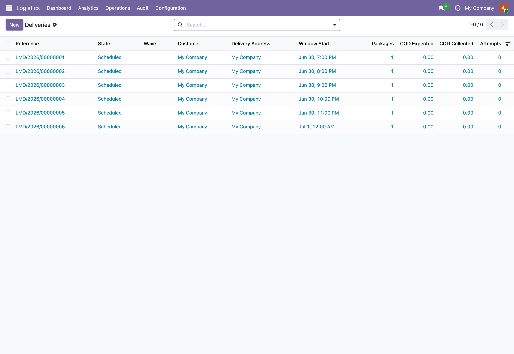

One driver, thirty stops, one wave. Plan the day, dispatch in one click, capture proof of delivery and cash on delivery, and reconcile the shift before the keys come back.

Last-mile delivery controlDeliveries with scheduled windows, attempts, cash-on-delivery tracking and proof of delivery.
Both the wave and each stop run an enforced transition map. A wave moves draft, dispatched, in-progress, completed, closed. A stop moves scheduled, out-for-delivery, delivered, failed, returned. Illegal jumps raise. Direct writes to state are rejected, so status only changes through the action that does the work.
Per-stop expected COD aggregates up the wave into expected, collected, and outstanding. Marking a COD stop delivered demands the collected amount, and collected can never exceed expected. A wave will not close while COD is still outstanding, so the driver settles before the shift signs off.
Each knock at a door writes an append-only attempt row with outcome, timestamp, and optional GPS coordinates. After the configurable attempt cap (default three) the stop auto-routes to failed, then to return-to-sender or back to scheduled for a fresh run. Attempt entries are immutable except for notes.
Morning: the dispatcher builds a wave for a driver and vehicle, drops in the day's stops from confirmed sale orders or as ad-hoc pickups, and orders them by drag-and-drop. One dispatch action runs a pre-flight (no empty waves, no expired driver licence), stamps the departure time, and pushes every scheduled stop to out-for-delivery. On the road: each drop is marked delivered with recipient name, signature, and photo, or marked failed with an outcome that logs an attempt. COD stops capture the collected cash and method at the door. Failures past the attempt cap fall to failed, then return-to-sender. End of shift: the wave will not complete while any stop is still pending, and will not close while COD is outstanding. The driver manifest PDF carries the stop list and the cash-up table for the hand-back.
In the shipped code today, each one a place where a cheaper module silently does the wrong thing.
Collected COD cannot exceed the expected amount on a stop. The mark-delivered action rejects an over-collection rather than silently banking it, and a COD stop refuses to close as delivered until the collected figure is entered.
A failed knock does not fail the stop. The attempt is logged and the stop stays out-for-delivery until attempts reach the configured cap (default three), at which point it auto-routes to failed. The cap is set per company and mirrored as a system parameter.
A wave cannot be completed while any stop is still pending (scheduled or out-for-delivery), and cannot be closed while COD outstanding is above zero. Both raise a clear, coded error naming the blocker.
Once an attempt is captured, every field except notes is immutable. You cannot rewrite the outcome or the timestamp of a delivery attempt after the fact, so the attempt history stands as an audit trail.
Dispatch is blocked if the wave has no deliveries or if the assigned driver's licence has expired, with the expiry date surfaced in the error. The wave will not leave the yard on a stale licence.
A failed stop can be rescheduled back to scheduled for another run, or sent return-to-sender with a captured reason (max attempts, address incorrect, refused, damaged, recall, other). The route is explicit, not a guess.
Bulk mark-delivered deliberately skips any stop carrying a COD amount, because cash collection cannot be bulk-confirmed. The wizard reports how many were marked and how many skipped, so COD stops never get closed blind.
Waves, deliveries, and attempts are all scoped by global company-isolation record rules. A dispatcher in one company never sees another company's stops or cash.
Odoo 19 last mile delivery, last mile delivery management Odoo, Odoo route dispatch, Odoo proof of delivery ePOD, cash on delivery Odoo COD, delivery wave planning, Odoo delivery attempts and returns, driver manifest Odoo, multi-stop dispatch Odoo Community, B2C delivery distribution Odoo, Odoo logistics suite, return to sender workflow, last mile route board, Odoo Community delivery tracking
The interface ships translated out of the box. Switch language in Odoo and the fields, menus, and messages follow.
Premium ERP Heritage modules that extend the same stack, each built to the same engineering bar.
Connect Odoo partner records to the Saudi SPL National Address service and the Wathq commercial registry
One click install of the full Employment Hero integration for Odoo Community, covering the connector, two way syn...
The Malaysia country pack for the ERP Heritage Employment Hero integration
A dependency free asynchronous job queue that runs long running and fan out work out of band of the request that...
Post Irish payslips to the general ledger on the Irish chart of accounts